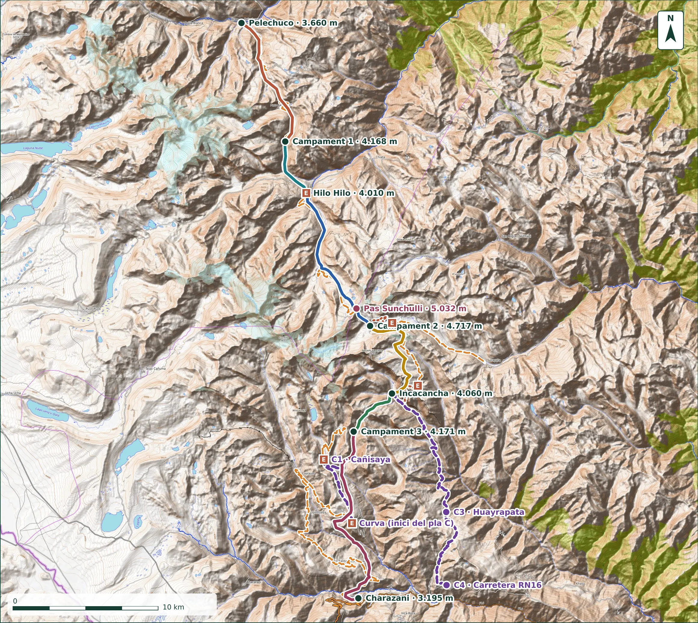
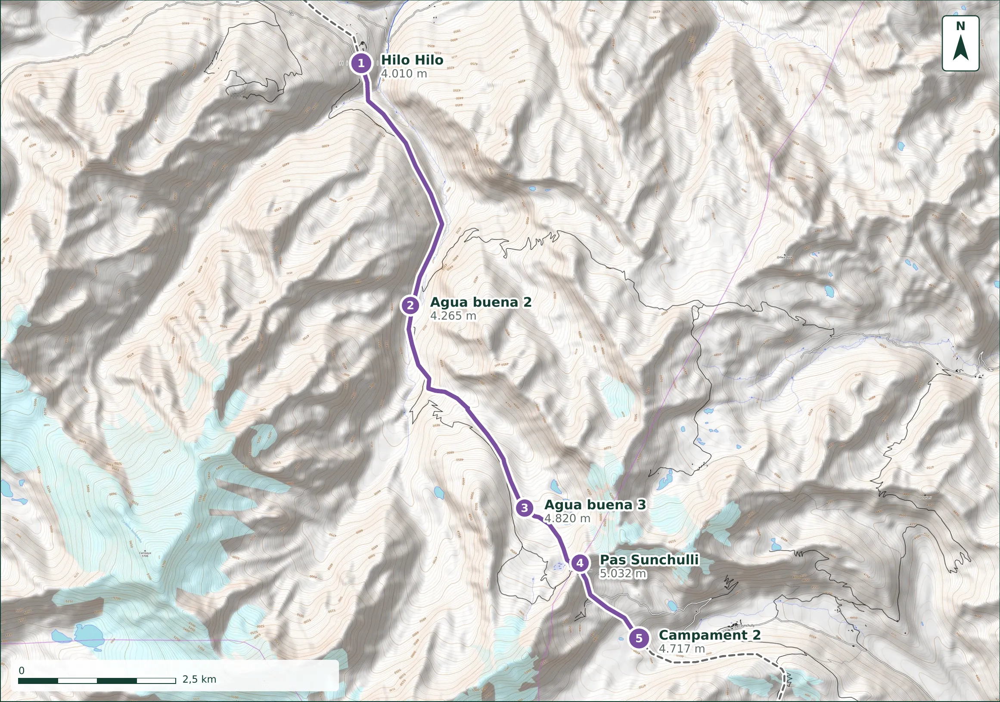
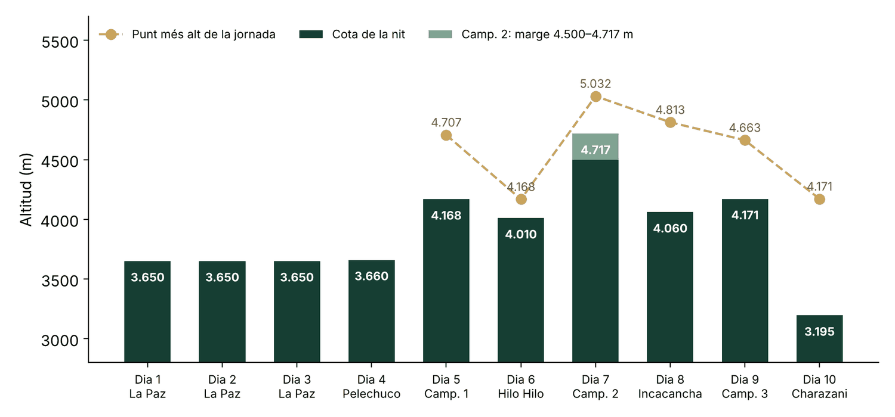
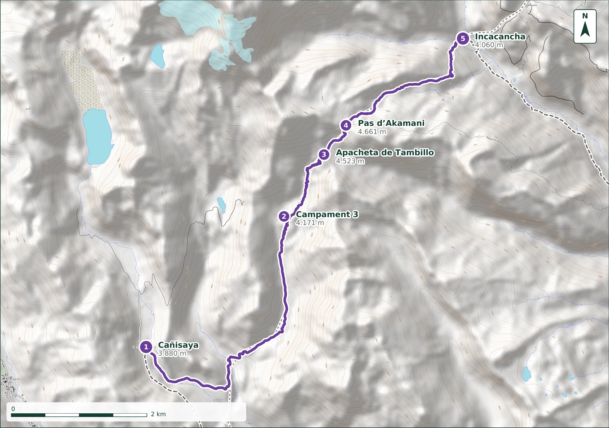

Treball TD2 · Tècnic esportiu en mitja muntanya
Orientació, cartografia i planificacióCom s’ha planificat la travessa: fonts, mapes, horaris, llum, decisions i alternatives.
01 · La zona

Mapa general de l’Atles A3: ruta, plans B, pla C i sortides en vehicle.
02 · Fonts
| Font | Any | Què aporta |
|---|---|---|
| Track GPS (Wikiloc) | 2012 | Geometria i temps de pas: 199 punts, tres cotes corregides |
| Relats i registres de caminants | 2022–2025 | Corredor, Hilo Hilo, passos i accés en 4×4; incidència de navegació cap a Lorisani |
| OpenStreetMap i SRTM | 2026 | ≈36 % del camí ja és pista minera; rutes dels plans B i C |
| Sis operadors bolivians | nov. 2026 | Llocs, cotes i durades de les etapes |
| ABC (carreteres) | 2025–2026 | Talls i esllavissades als trasllats |
| Dada | GPX 2012 | Fonts recents |
|---|---|---|
| Hilo Hilo | 4.010 m | 4.010 m |
| Pas Sunchulli | 5.032 m | 5.100 m |
| Etapa 2 sencera | 7 h 17 | unes 9 h |
| Camp de Sunchulli | 4.717 m | uns 4.500 m |
| Pistes mineres | no hi consten | ≈36 % del camí |
| Final | Charazani | sovint Curva |
Confirmen que el disseny és versemblant. No substitueixen el reconeixement: passos, campaments, aigua i el pont de l’última jornada.
03 · Cartografia

| GPX | Text |
|---|---|
| Hilohilo | Hilo Hilo |
| Paso Sunchulli | Pas Sunchulli |
| Campamento1 | Campament 1 |
| Charasani / Fin | Charazani |
04 · Les jornades
| Dia | Jornada | Km | Desnivell | Hores | Nit |
|---|---|---|---|---|---|
| 5 | Pelechuco → Campament 1 | 9,7 | +1.047 / −540 | 6–8 | 4.168 m |
| 6 | Campament 1 → Hilo Hilo | 4,2 | +31 / −189 | 2–3 | 4.010 m |
| 7 | Hilo Hilo → Pas Sunchulli → Campament 2 | 11,4 | +1.062 / −354 | 7–9 | 4.500–4.700 m |
| 8 | Campament 2 → Incacancha | 8,3 | +211 / −867 | 5–7 | 4.060 m |
| 9 | Incacancha → Campament 3 | 4,1 | +602 / −491 | 4–6 | 4.171 m |
| 10 | Campament 3 → Charazani | 15,8 | +497 / −1.473 | 8–9 h 30 | 3.195 m |
Regla de llum: sortida a partir de les 07.10 i arribada abans de les 16.40.
05 · Càlcul d’horaris
| Jornada | Registre 2012 | Planificació | Factor |
|---|---|---|---|
| Dia 5 · 9,7 km | 5 h 34 | 6–8 h | 1,1–1,4 |
| Dia 6 · 4,2 km | 1 h 17 | 2–3 h | 1,6–2,3 (recuperació) |
| Dia 7 · 11,4 km | 6 h 00 | 7–9 h | 1,2–1,5 |
| Dia 8 · 8,3 km | 4 h 29 | 5–7 h | 1,1–1,6 |
| Dia 9 · 4,1 km | 2 h 32 | 4–6 h | 1,6–2,4 |
| Dia 10 · 15,8 km | 5 h 57 | 8–9 h 30 | 1,3–1,6 |
| Etapa 2 sencera · 15,6 km | 7 h 17 | 9 h 30–11 h 40 | 1,3–1,6 → no cap |
El registre no indica la mida del grup ni les parades: és una referència mínima, no un horari.
06 · Llum
| Juny 2027 | Sortida del sol | Posta | Posta − 90 min |
|---|---|---|---|
| 1 de juny | 06:54 | 18:13 | 16:43 |
| 15 de juny | 06:59 | 18:14 | 16:44 |
| 30 de juny | 07:02 | 18:17 | 16:47 |
Càlcul propi amb les equacions NOAA per a Pelechuco (−14,820°, −69,071°), hora de Bolívia (UTC−4). Horitzó ideal: el relleu i els núvols redueixen la llum útil.
07 · Perfil i aclimatació

08 · Punts de decisió
Retirada ordinària: només pel camí comprovat fins al darrer punt segur. Símptomes greus d’altitud: descens prioritari i assistència.
09 · Meteorologia
| Font | Per a què |
|---|---|
| SENAMHI | Font oficial: pronòstic i avisos |
| Windy (ECMWF) | Al Pas Sunchulli (−14,997; −68,997): vent a 500 hPa, isoterma 0 °C, núvols |
| Meteoblue | Meteograma i comparació de models |
| Mountain-Forecast | Vent i fred a la cota dels passos |
| Satèl·lit GOES | Tempestes que entren des de l’Amazònia |
10 · Temporada i plans B
Finestra recomanada: del 15 de juny al 31 de juliol
Fosc: recomanat · verd clar: possible · beix: risc de nevades fortes (agost de 1993 i de 2019) · gris: pluges i carreteres tallades.
11 · Pla C
| Etapa | Recorregut | Km | Desnivell | Hores | Nit |
|---|---|---|---|---|---|
| C1 | Curva → Cañisaya | 5,2 | +200 / −60 | 2–3 | 3.880 m |
| C2 | Cañisaya → Pas d’Akamani (4.661 m) → Incacancha | 10,0 | +950 / −750 | 6–8 | 4.060 m |
| C3 | Incacancha → Pas Lorisani → Huayrapata | 12,1 | +580 / −950 | 6–8 | 3.700 m |
| C4 | Huayrapata → Pas de Chatalayo → RN16 → Charazani | 7,3 | +340 / −680 | 4–5 | 3.195 m |

12 · Eines de navegació
L’app complementa, no substitueix, el mapa, la brúixola i el GPS.
13 · Conclusions
Definit
Reconeixement de camp
Moltes gràcies.